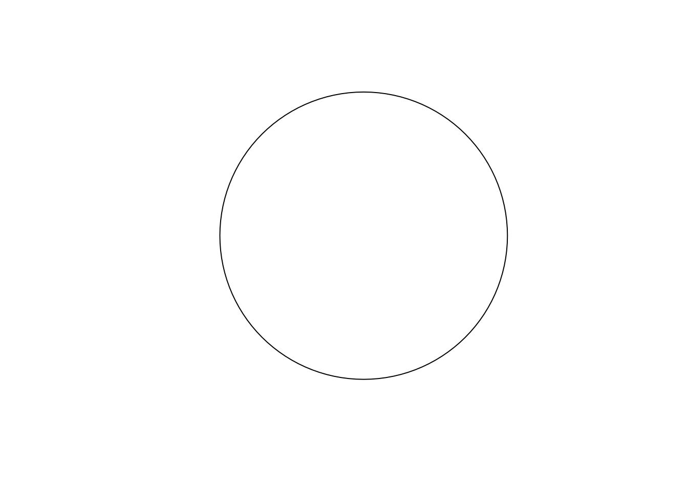
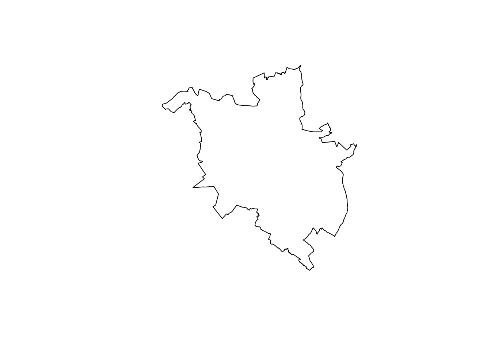
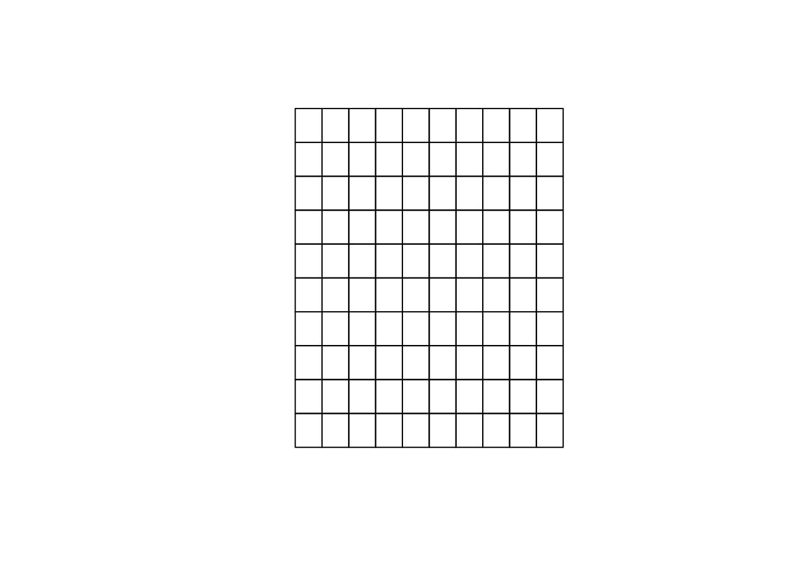
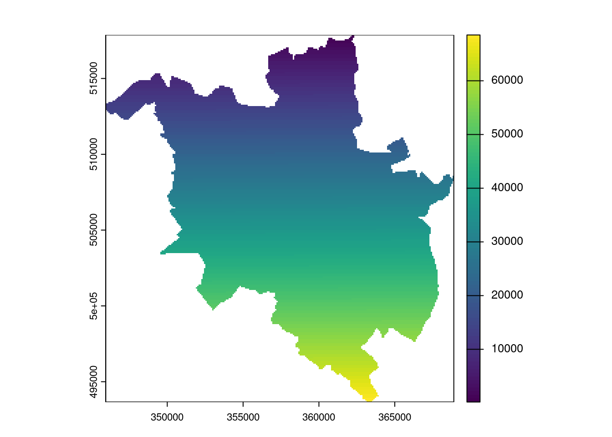
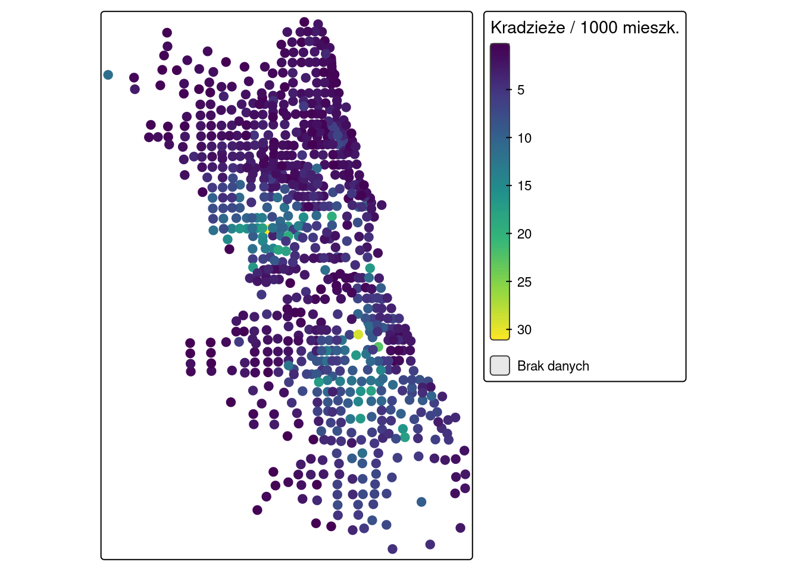
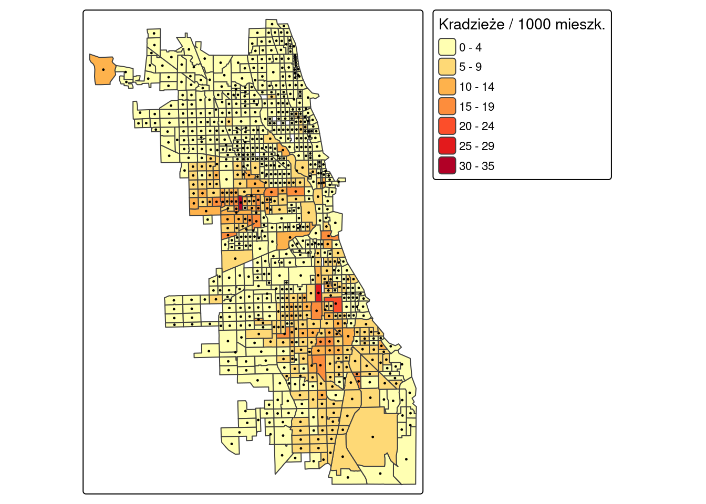

library(sf)
library(terra)
library(tmap)
library(dplyr)
# granice powiatów województwa wielkopolskiego - operacje geometryczne
powiaty = read_sf("data/wlkp_powiaty.gpkg", layer = "powiaty")
# przygotowany zbiór z hrabstwa Cook - przykłady wymagające zmiennej liczbowej
cook = read_sf("data/cook_przygotowane.gpkg", layer = "cook")
# punkty pomiarowe temperatury powietrza
punkty = read.csv("data/punkty.csv")
# dane rastrowe: cyfrowy model wysokościowy oraz raster wielowarstwowy
srtm = rast("data/srtm.tif")
siatka_all = rast("data/siatka-all.tif")Załącznik C — Operacje na danych przestrzennych
Katalog operacji na danych przestrzennych w R — do wykorzystania w kolejnych rozdziałach oraz przy pracy nad projektami. Czynności podstawowe, potrzebne na zajęciach, omawia Rozdział 1; ten załącznik zbiera pozostałe.
Zakres załącznika
Znajdują się tu operacje techniczne na danych przestrzennych: import i eksport, tworzenie i przekształcanie obiektów, selekcja, tworzenie siatek, operacje na rastrach, elementy kompozycji mapy. Nie ma tu metod statystyki przestrzennej — te omawiane są w rozdziałach odpowiadających poszczególnym blokom zajęć.
Odpowiedź na pytanie „której funkcji użyć” znajduje się w Załącznik B; tutaj jest pokazane, jak jej użyć.
C.1 Dane i pakiety
Przykłady w tym załączniku korzystają z danych wczytanych poniżej. Blok ten należy uruchomić przed wykonaniem pozostałych fragmentów kodu. Operacje geometryczne pokazane są na granicach powiatów województwa wielkopolskiego, a przykłady wymagające zmiennej liczbowej — na przygotowanym zbiorze z hrabstwa Cook (Rozdział 1).
Pozostałe operacje na danych przestrzennych — do wykorzystania w kolejnych rozdziałach oraz w projektach. Ta część nie jest omawiana na zajęciach.
C.2 Import i eksport danych
R odczytuje dane przestrzenne z wielu formatów. Do najpopularniejszych należą: dane tekstowe (.csv), dane wektorowe (.shp), dane rastrowe (GeoTIFF, .tif) oraz geopaczki (.gpkg), które mogą przechowywać jednocześnie warstwy wektorowe, rastrowe oraz tabele.
Zapis danych wektorowych — funkcja write_sf() nadpisuje plik:
dir.create("out", showWarnings = FALSE)
write_sf(powiaty, dsn = "out/out_powiaty_wlkp.shp")Zapis kilku warstw do jednej geopaczki — funkcja st_write() nie nadpisuje pliku automatycznie, dlatego nazwę warstwy podaje się argumentem layer, a argument delete_dsn = TRUE usuwa plik istniejący wcześniej:
st_write(powiaty, dsn = "out/out_powiaty_wlkp.gpkg", layer = "powiaty2", delete_dsn = TRUE)Deleting source `out/out_powiaty_wlkp.gpkg' using driver `GPKG'
Writing layer `powiaty2' to data source
`out/out_powiaty_wlkp.gpkg' using driver `GPKG'
Writing 35 features with 2 fields and geometry type Multi Polygon.st_write(powiaty, dsn = "out/out_powiaty_wlkp.gpkg", layer = "powiaty3")Writing layer `powiaty3' to data source
`out/out_powiaty_wlkp.gpkg' using driver `GPKG'
Writing 35 features with 2 fields and geometry type Multi Polygon.st_layers("out/out_powiaty_wlkp.gpkg")Driver: GPKG
Available layers:
layer_name geometry_type features fields crs_name
1 powiaty2 Multi Polygon 35 2 ETRF2000-PL / CS92
2 powiaty3 Multi Polygon 35 2 ETRF2000-PL / CS92Zapis rastra, w tym pojedynczej warstwy z obiektu wielowarstwowego:
writeRaster(siatka_all, "out/out_siatka_all.tif", overwrite = TRUE)
writeRaster(siatka_all["siatka-all_2"], "out/out_clc.tif", overwrite = TRUE)C.3 Dalsze informacje o strukturze obiektów
Pełną strukturę obiektu sf wypisuje funkcja str():
punkty_sf = st_as_sf(punkty |> filter(!is.na(temp)),
coords = c("x", "y"), crs = "EPSG:2180")
str(punkty_sf)Classes 'sf' and 'data.frame': 247 obs. of 6 variables:
$ srtm : num 176 150 273 187 260 ...
$ clc : int 1 1 NA 1 1 2 2 1 1 2 ...
$ temp : num 13.9 15.5 12.8 14.3 15.9 ...
$ ndvi : num 0.616 0.556 0.607 0.376 0.46 ...
$ savi : num 0.419 0.379 0.375 0.239 0.309 ...
$ geometry:sfc_POINT of length 247; first list element: 'XY' num 750298 716732
- attr(*, "sf_column")= chr "geometry"
- attr(*, "agr")= Factor w/ 3 levels "constant","aggregate",..: NA NA NA NA NA
..- attr(*, "names")= chr [1:5] "srtm" "clc" "temp" "ndvi" ...Usunięcie geometrii — obiekt przestrzenny staje się zwykłą ramką danych:
punkty_df = st_drop_geometry(punkty_sf)
head(punkty_df) srtm clc temp ndvi savi
1 175.7430 1 13.852222 0.6158061 0.4189449
2 149.8111 1 15.484209 0.5558816 0.3794864
3 272.8583 NA 12.760814 0.6067462 0.3745572
4 187.2777 1 14.324648 0.3756170 0.2386246
5 260.1366 1 15.908549 0.4598393 0.3087599
6 160.1416 2 9.941118 0.5600288 0.3453627Wydobycie współrzędnych jako macierzy i dołączenie ich z powrotem do tabeli:
xy = st_coordinates(punkty_sf)
head(xy) X Y
[1,] 750298.0 716731.6
[2,] 753482.9 717331.4
[3,] 747242.5 720589.0
[4,] 755798.9 718828.1
[5,] 746963.5 717533.5
[6,] 756801.6 720474.1punkty_df2 = cbind(punkty_df, xy)
head(punkty_df2) srtm clc temp ndvi savi X Y
1 175.7430 1 13.852222 0.6158061 0.4189449 750298.0 716731.6
2 149.8111 1 15.484209 0.5558816 0.3794864 753482.9 717331.4
3 272.8583 NA 12.760814 0.6067462 0.3745572 747242.5 720589.0
4 187.2777 1 14.324648 0.3756170 0.2386246 755798.9 718828.1
5 260.1366 1 15.908549 0.4598393 0.3087599 746963.5 717533.5
6 160.1416 2 9.941118 0.5600288 0.3453627 756801.6 720474.1Pełna definicja układu współrzędnych w formacie WKT2:
st_crs(punkty_sf)Coordinate Reference System:
User input: EPSG:2180
wkt:
PROJCRS["ETRF2000-PL / CS92",
BASEGEOGCRS["ETRF2000-PL",
DATUM["ETRF2000 Poland",
ELLIPSOID["GRS 1980",6378137,298.257222101,
LENGTHUNIT["metre",1]]],
PRIMEM["Greenwich",0,
ANGLEUNIT["degree",0.0174532925199433]],
ID["EPSG",9702]],
CONVERSION["Poland CS92",
METHOD["Transverse Mercator",
ID["EPSG",9807]],
PARAMETER["Latitude of natural origin",0,
ANGLEUNIT["degree",0.0174532925199433],
ID["EPSG",8801]],
PARAMETER["Longitude of natural origin",19,
ANGLEUNIT["degree",0.0174532925199433],
ID["EPSG",8802]],
PARAMETER["Scale factor at natural origin",0.9993,
SCALEUNIT["unity",1],
ID["EPSG",8805]],
PARAMETER["False easting",500000,
LENGTHUNIT["metre",1],
ID["EPSG",8806]],
PARAMETER["False northing",-5300000,
LENGTHUNIT["metre",1],
ID["EPSG",8807]]],
CS[Cartesian,2],
AXIS["northing (x)",north,
ORDER[1],
LENGTHUNIT["metre",1]],
AXIS["easting (y)",east,
ORDER[2],
LENGTHUNIT["metre",1]],
USAGE[
SCOPE["Topographic mapping (medium and small scale)."],
AREA["Poland - onshore and offshore."],
BBOX[49,14.14,55.93,24.15]],
ID["EPSG",2180]]Zamiana rastra na ramkę danych:
srtm_df = as.data.frame(srtm)
head(srtm_df) srtm
38 240.9517
39 238.6385
40 237.6719
41 235.7462
42 230.6863
43 229.8866C.4 Tworzenie obiektów wektorowych od zera
Funkcja st_point() tworzy pojedynczy punkt na podstawie wektora współrzędnych, a funkcja st_sfc() tworzy z niego kolumnę geometrii i dodaje informację o układzie współrzędnych:
st_point(c(16.941820, 52.464279))POINT (16.94182 52.46428)p1 = st_sfc(st_point(c(16.941820, 52.464279)), crs = 4326)
p1Geometry set for 1 feature
Geometry type: POINT
Dimension: XY
Bounding box: xmin: 16.94182 ymin: 52.46428 xmax: 16.94182 ymax: 52.46428
Geodetic CRS: WGS 84POINT (16.94182 52.46428)C.5 Zmiana układu współrzędnych
Obiekt p1 powstał ze współrzędnych geograficznych w układzie WGS 84 (EPSG:4326). Funkcja st_transform() przekształca go do układu PUWG 1992 (EPSG:2180):
p1a = st_transform(p1, 2180)
p1aGeometry set for 1 feature
Geometry type: POINT
Dimension: XY
Bounding box: xmin: 360220.9 ymin: 512925.4 xmax: 360220.9 ymax: 512925.4
Projected CRS: ETRF2000-PL / CS92POINT (360220.9 512925.4)C.6 Strefa buforowa
Funkcja st_buffer() wyznacza otoczkę o zadanej odległości, wyrażonej w jednostkach układu współrzędnych — w tym przypadku w metrach:
bfr = st_buffer(p1a, dist = 50000)
plot(bfr)
C.7 Centroidy poligonów
powiaty_centroidy = st_centroid(powiaty)
head(powiaty_centroidy)Simple feature collection with 6 features and 2 fields
Geometry type: POINT
Dimension: XY
Bounding box: xmin: 319500.7 ymin: 442156.9 xmax: 404928.2 ymax: 568496.7
Projected CRS: ETRF2000-PL / CS92
# A tibble: 6 × 3
Nazwa TERYT geom
<chr> <chr> <POINT [m]>
1 chodzieski 3001 (365156.4 568496.7)
2 czarnkowsko-trzcianecki 3002 (323039.8 563992.2)
3 gnieźnieński 3003 (404928.2 520088.9)
4 gostyński 3004 (366508.5 442156.9)
5 grodziski 3005 (319500.7 482387.3)
6 jarociński 3006 (398122.1 459364)C.8 Selekcja na podstawie lokalizacji
Indeksowanie obiektu przestrzennego drugim obiektem przestrzennym wybiera obiekty, które się z nim przecinają:
centroidy_bfr = powiaty_centroidy[bfr, ]
nrow(centroidy_bfr)[1] 9Argument op pozwala wskazać inną relację przestrzenną niż przecinanie:
powiaty_centroidy[bfr, , op = st_within]C.9 Selekcja na podstawie atrybutów
Tabelę atrybutów obiektu sf przeszukuje się tak jak każdą inną ramkę danych; geometria pozostaje powiązana z wybranymi wierszami:
poznan = powiaty |>
filter(Nazwa == "Poznań")
plot(st_geometry(poznan))
C.10 Siatka wektorowa
Tworzenie siatki składa się z trzech kroków: utworzenia poligonu o zasięgu warstwy, utworzenia siatki funkcją st_make_grid() (argument n określa liczbę kolumn i wierszy) oraz zamiany wyniku na obiekt klasy sf:
wlkp_bb = st_sf(geom = st_as_sfc(st_bbox(powiaty)))
wlkp_grid = st_make_grid(wlkp_bb, n = 10)
wlkp_grid_sf = st_sf(geometry = wlkp_grid)
plot(wlkp_grid)
C.11 Siatka rastrowa
Funkcja rast() tworzy także pusty raster o zadanym zasięgu, rozdzielczości i układzie współrzędnych. Do utworzonej siatki należy przypisać wartości:
moja_siatka = rast(ext = poznan, res = 90, crs = crs(poznan))
moja_siatka = setValues(moja_siatka, 1:ncell(moja_siatka))
moja_siatkaclass : SpatRaster
size : 269, 255, 1 (nrow, ncol, nlyr)
resolution : 90, 90 (x, y)
extent : 345943.2, 368893.2, 493660, 517870 (xmin, xmax, ymin, ymax)
coord. ref. : ETRF2000-PL / CS92 (EPSG:2180)
source(s) : memory
name : lyr.1
min value : 1
max value : 68595 Zasięg można również podać wprost, za pomocą współrzędnych:
moja_siatka2 = rast(xmin = 345943.2, ymin = 493660,
xmax = 368893.2, ymax = 517870,
res = 90, crs = crs(poznan))C.12 Przycięcie rastra do granicy warstwy
Argument mask = TRUE przycina raster do obwiedni warstwy, a dodatkowo nadaje wartość NA komórkom położonym poza jej granicą:
poznan_rst = crop(moja_siatka, poznan, mask = TRUE)
plot(poznan_rst)
C.13 Zmiana rozdzielczości rastra
Funkcja aggregate() łączy komórki, zmniejszając rozdzielczość. Argument fact określa krotność zmiany (fact = 2 zamienia komórki 90 m na 180 m), a argument fun — funkcję, za pomocą której łączone są wartości.
poznan_rst_agg = aggregate(poznan_rst, fact = 2, fun = "sum")
poznan_rst_aggclass : SpatRaster
size : 135, 128, 1 (nrow, ncol, nlyr)
resolution : 180, 180 (x, y)
extent : 345943.2, 368983.2, 493570, 517870 (xmin, xmax, ymin, ymax)
coord. ref. : ETRF2000-PL / CS92 (EPSG:2180)
source(s) : memory
name : lyr.1
min value : 1236
max value : 272612 Zagreguj warstwę rastrową
srtmdo rozdzielczości 360 m. Jaką wartość musi przyjąć argumentfact? Warstwasrtmto cyfrowy model wysokościowy — jej komórki zawierają wysokość n.p.m. Jakiej funkcji należy użyć do agregacji takich danych?
C.14 Pozostałe elementy mapy
Dane punktowe można przedstawić funkcją tm_dots() (punkty o stałej wielkości) lub tm_symbols() (symbole o zmiennej wielkości i wypełnieniu):
cook_centroidy = st_centroid(cook)
tm_shape(cook_centroidy) +
tm_dots(fill = "CRIME_RATE",
fill.scale = tm_scale_continuous(values = "viridis", label.na = "Brak danych"),
fill.legend = tm_legend(title = "Kradzieże / 1000 mieszk."),
size = 0.5)
Łączenie warstw wektorowych:
tm_shape(cook) +
tm_polygons(fill = "CRIME_RATE",
fill.scale = tm_scale_intervals(values = "brewer.yl_or_rd"),
fill.legend = tm_legend(title = "Kradzieże / 1000 mieszk.")) +
tm_shape(cook_centroidy) +
tm_dots(size = 0.1)
Zapis mapy do pliku graficznego:
tm = tm_shape(cook) +
tm_polygons(fill = "CRIME_RATE")
tmap_save(tm, "out/mapa.png", width = 600, height = 600)